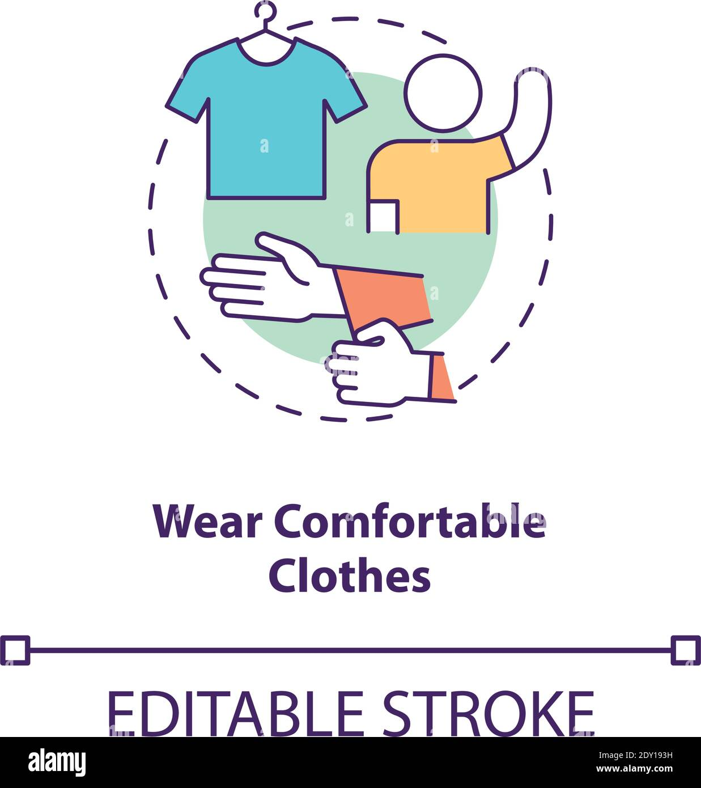

Prepare for a smooth and enjoyable trip by learning helpful travel tips for exploring Albay safely, comfortably, and conveniently.
Visiting Albay can be a fun and memorable experience because the province offers beautiful views, tourist attractions, local food, and exciting outdoor activities. To make the most of your trip, it is important to prepare ahead, wear comfortable clothes, bring the things you need, and plan your destinations well. Simple travel tips can help visitors enjoy their stay while avoiding common problems during the trip.

Before visiting Albay, it is best to check the weather forecast especially if you plan to visit beaches, mountains, or outdoor tourist spots. Good weather helps make your trip safer and more enjoyable.

Since Albay has many outdoor destinations, visitors should wear light and comfortable clothes. It is also a good idea to bring extra clothes, comfortable footwear, sunscreen, and a hat for protection from the sun.

Some local stores, terminals, and small establishments may only accept cash, so it is helpful to bring enough money for food, transportation, entrance fees, and other expenses during your trip.

Albay has many attractions, so planning your destinations ahead of time can save effort and help you enjoy more places in one trip. It is better to group nearby tourist spots together when making your travel schedule.
Always keep your important belongings safe while traveling. Bring water, snacks, and basic personal items, especially if you plan to stay outdoors for a long time. It is also helpful to ask locals, drivers, or hotel staff for directions and suggestions because they know the area well. Respect local culture, keep tourist spots clean, and enjoy your visit responsibly so that your trip in Albay will be safe, organized, and memorable.
Research the places you want to visit first so you can prepare your route, budget, and travel time properly.
Wear comfortable clothes, bring water, and travel during good weather to make your trip more relaxing and enjoyable.
Keep your belongings secure, follow local rules, and stay aware of your surroundings while visiting tourist spots.